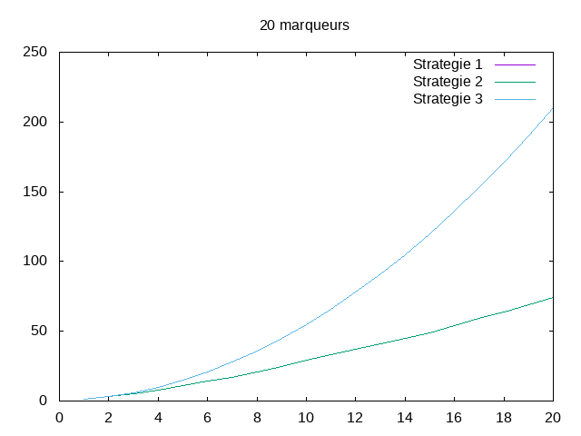

Experimentateur¶
Etat du TP¶
Stratégie 1 terminée
Réponses aux questions¶
1.2.2
Pour étudier la complexité de cet algorithme , l’opération que nous pouvons compter et le nombre d’utilisation de la fonction compare.
1.2.3
Cet algorithme sors de la boucle de comparaison lorsque le marquer recherché a été trouvé dans la liste positive. Ainsi le pire de cas et celui ou aucun des marqueurs ne se trouve dans la liste positive.
1.2.4
Si on a m la longeur de la liste de marqueur et p la longeur de la liste de positif, alors dans le pire de cas le nombre d’occurence de OP et m*p.
1.3.2
Le pire des cas est celui ou aucun des marqueurs ne se trouve dans la liste positive dans le pire des cas, le nombre de comparaison sera de m*log2(p)
1.4.2
Le pire des cas est celui ou aucun des marqueurs ne se trouve dans la liste positive. Dans ce cas, le nombre de comparaison sera de m*p
1.5.6
